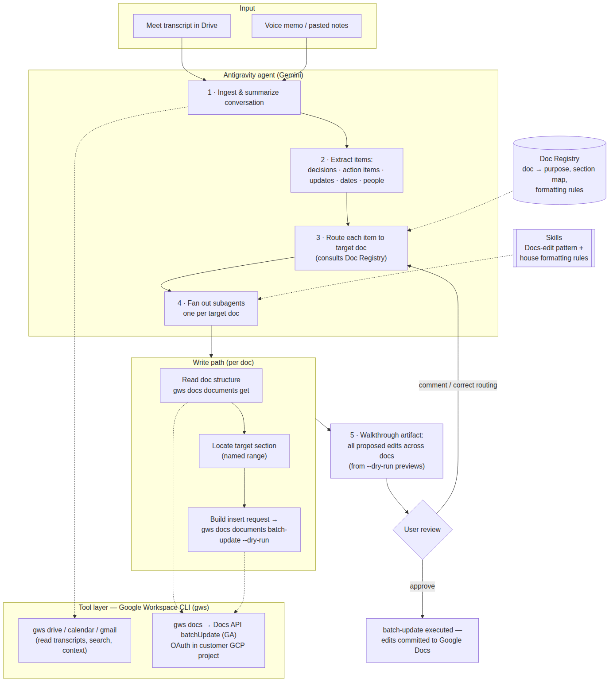

One conversation in — every affected Google Doc updated, in the right section and format, with review before anything is written.
A single conversation — a meeting, a voice memo, a braindump — often contains information that belongs in several different Google Docs: project notes, 1:1 docs, decision logs, task trackers. Distributing that information is currently a manual step.
The goal: an agent that takes one conversation as input, determines which docs are affected, and updates each one in the appropriate section and format — with the user reviewing changes before they are written. Assumes a Google Workspace organization with a GCP project; all OAuth clients, API enablement, and agent inference run under that project.
The primary tool layer is the Google Workspace CLI (gws) — Google's first-party CLI covering the full Workspace API surface, including Docs editing.
| Capability needed | Status | How |
|---|---|---|
| Agent orchestration, subagents, scheduled tasks, skills | check_circle Available | Antigravity desktop app / CLI (agy) |
| Read transcripts / files from Drive | check_circle Available | gws drive files … (read, search, download) |
| Calendar / Gmail context | check_circle Available | gws calendar …, gws gmail … |
| Edit Google Docs in place | check_circle Available | gws docs documents batch-update → Docs API batchUpdate (GA): positional inserts, named ranges, styling |
gws authenticates via OAuth against the customer's own GCP project (gws auth setup / gws auth login), returns structured JSON, and supports --dry-run to preview requests — a natural review-before-write primitive. Workspace admin controls and user permissions apply as usual.

A lightweight index mapping each doc to its purpose, section layout, and formatting conventions. Routing consults it to place every extracted item. Docs API named ranges make section targeting deterministic, not heuristic. This is the core of the system.
The edit pattern encoded once: read structure → locate named range → build the batchUpdate insert → --dry-run for review → execute on approval. House rules enforced: append dated entries only, never delete.
Conventions encoded as Antigravity skills — action items become checkboxes with owner and date, decisions get dated entries — so behavior is consistent across runs.
A conversation typically touches 3–6 docs. Each target doc gets its own updater subagent running in parallel; results are reviewed together.
The walkthrough artifact presents all proposed edits across docs as one change-set, built from the --dry-run previews. Nothing is written until approved; routing corrections feed back into the registry.
An Antigravity scheduled task can sweep new Meet transcripts in Drive on a cadence and process them without manual input, once edit quality is established.
gws auth in the GCP project--dry-run review-before-writegws versionbatchUpdate)